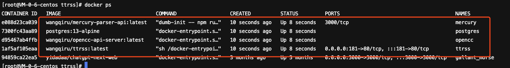

告别信息过载，15分钟快速搭建rss服务
为什么需要rss
参考指南
准备工作
安装docker-compose
用来管理和启动多个docker容器的工具，可以降低docker应用的部署难度
1 | # 下载 |
添加命令到PATH
linux可执行文件添加到PATH环境变量的方法-腾讯云开发者社区-腾讯云
安装主体
1 | # 下载docker-compose配置 |
修改配置文件
- 将 PostgreSQL 数据库的默认密码进行修改。暴露在公网的数据库使用默认密码非常危险。
- 将 Tiny Tiny RSS 服务的部署网址修改为我们实际的部署网址
- 注意，如果你的部署 URL 包含端口（默认部署端口为 181 端口），那么这里的 URL 也需要加上端口号，格式为 {网址}:{端口}不过不必担心，如果你这里的 URL 配置不正确，那么访问 Tiny Tiny RSS 的时候，Tiny Tiny RSS 会提醒你修改这里的值为正确的 URL，按照提醒进行配置即可
1 | # 在该目录下运行docker-compose， 启动Tiny Tiny RSS服务 |

上面内容表示我们开启了四个 Docker 容器，分别是：
- Tiny Tiny RSS 本身，监听端口为
0.0.0.0:181 → 80，同时暴露给外网 - PostgreSQL 数据库服务
- Mercury 全文抓取服务
- OpenCC 简体、繁体中文转换服务
如果发现问题，修改 docker-compose 的配置文件后，需要执行下面的命令重启 Docker 容器们：
1 |
|
nginx添加反向代理
1 | server { |
使用Tiny Tiny RSS
默认账号： admin
密码： password
其他的一些插件配置自己搜一下
rss订阅源生成器
本博客所有文章除特别声明外，均采用 CC BY-NC-SA 4.0 许可协议。转载请注明来自 xdCao's blog！